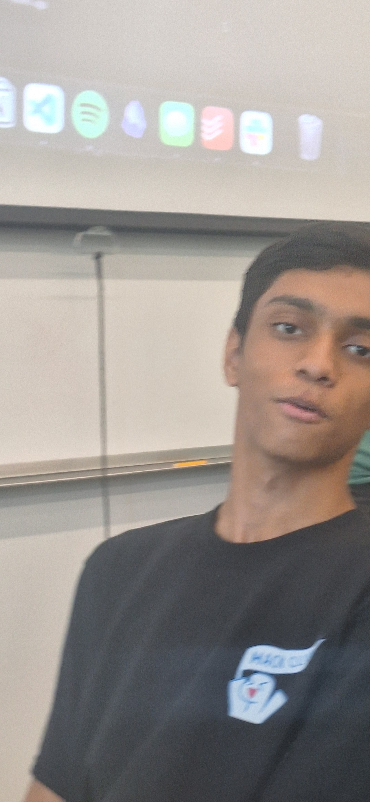
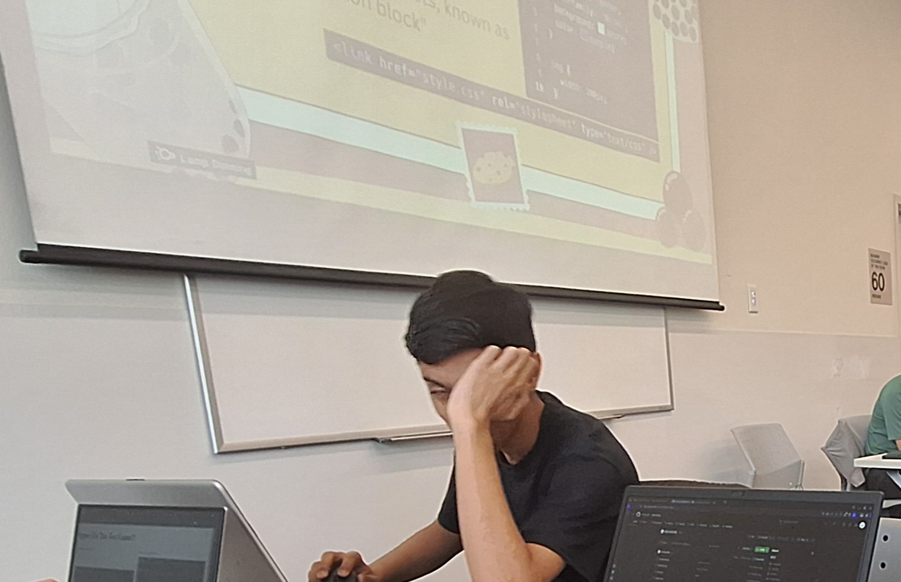

^ Click Me! ^
INTERNATIONAL SHANVANTH DAY
Who is Shanvanth?
Shanvanth is our favourite stickbug! We love Shanvanth for his sarcastic jokes, his funny look, and his narcissism! However, deep down in his hearth, Shanvanth is a hardened coder and outside of programming, plays 3-4 hours a day of League of Legends!
Why International Shanvanth Day?
We must appreciate Shanvanth, our favourite League of Legends player, even though he's hard stuck in Silver. He believes he's really good, but he's really not. Shan also really enjoys being cocky, and we must celebrate him for that. Shanvanth also has his name pronounced wrong on a daily basis, and he loves it!
When is International Shanvanth Day?
January 1st, because it reminds you that it's a new year to have confidence in yourself because you know Shan is worse than you at Competitive League of Legends!
How do I celebrate International Shanvanth Day?
You stare at him dead in the eye and you tell him "Shan you're bad."
